CoolClean App操作手冊
修訂記錄
| 版本號 | 修改人 | 日期 | 主要變更內容 |
|---|---|---|---|
| V1.0 | sx | 2022.12.11 | 建立初始版本 |
| V1.2 | zjh | 2023.05.15 | 更新登入、清潔計劃等內容 |
| V3.0 | swd | 2024.05.01 | 修復歷史錯誤 |
| V4.0 | zym | 2026.05.19 | 新增國際化配置 |
一、概述
CoolClean App是由九天創新科技開發的一款配合九天自主研發的室外機器人的掌上設置工具，旨在秉承著讓清潔更簡單方便的目的，推動大型企業集團文創園區、產業園區等微循環區域的清潔數字化、無人化的變革。CoolClean App主要和自主研發的無人清潔車配合實現車輛的遠程清潔控制，清潔數據報告的生成，設備遠程監控等。
二、軟件說明
2.1 軟件的執行安裝環境
本App執行適用於安卓9.0以上，華為鴻蒙1.0系統，iOS13.0以上。安裝好App後，可在手機主界面點擊圖標就可以執行，進行需要的軟件操作。
2.2 軟件的主要功能
CoolClean App可以一鍵掃碼綁定CoolClean自主研發的無人清潔車，綁定後透過對設備信息狀態的遠程查看獲取車輛執行的狀態，對車輛終端的參數進行遠程設置，同時可以構建地圖，創建清潔計劃，查看車輛歷史的清潔報告等等。
三、軟件使用
3.1 登入註冊
3.1.2 登入
透過雲平台授權賬號密碼登入

3.2 開始使用
開始使用的前提是在webApp已經完成建圖，分區和路徑上傳的工作後，再在App進行開始計劃創建等操作。分區建圖操作步驟請參考WebApp操作手冊，以下是手動從webApp上傳地圖操作步驟。
3.2.1 從運維app上傳地圖
在本地使用遙控器對車輛進行地圖建圖和路徑錄製完之後，可以進入車端的webApp，在導航界面點擊【關閉導航】後，隨後進入到地圖管理界面，如下圖：
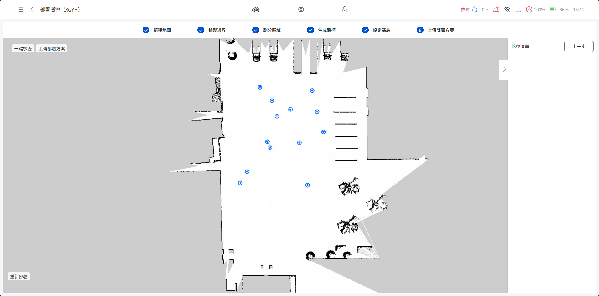
3.2.2 清潔計劃創建
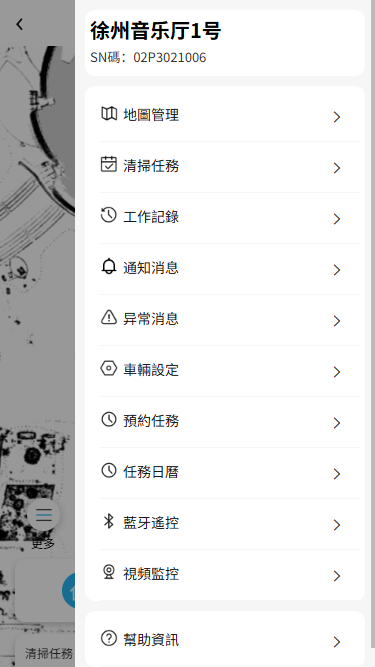
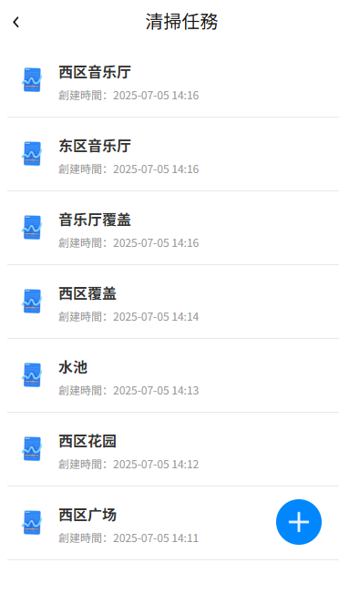
- 選擇分區：選擇需要劃分好後需要作業的區域
- 選擇次數：設定循環清掃次數，次數範圍為（1-10）
- 清潔強度：擋板高度、小（煙頭、散落樹葉等）、中（堆積小樹葉等）、高（堆積大樹葉等）、自動（水瓶等）
- 清掃方式：包括沿邊和覆蓋選擇，如果想先清掃沿邊後清掃覆蓋，可以先新增沿邊再繼續新增一個覆蓋任務
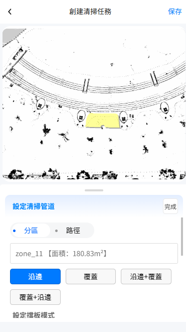
3.3 清潔操作
當用戶已經綁定了設備，創建了地圖和清潔計劃之後，就可以進行執行清掃動作了。
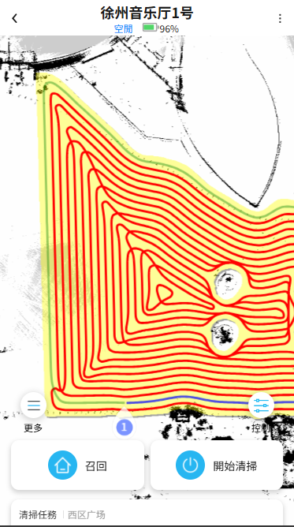
3.4 設備信息
3.4.1 查看地圖列表信息
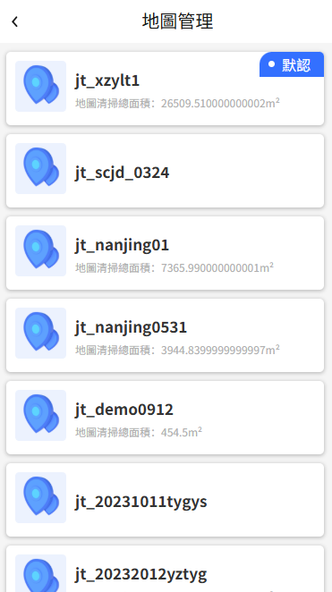
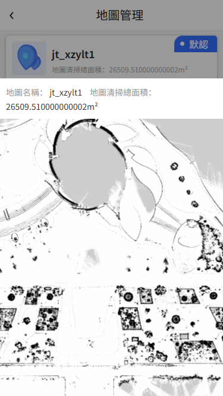
3.4.2 查看清潔任務信息
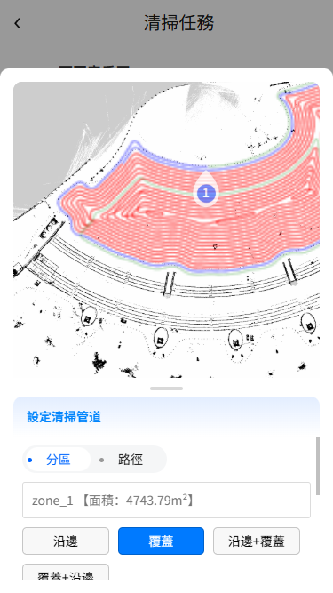
3.4.3 查看工作記錄
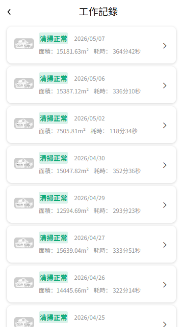
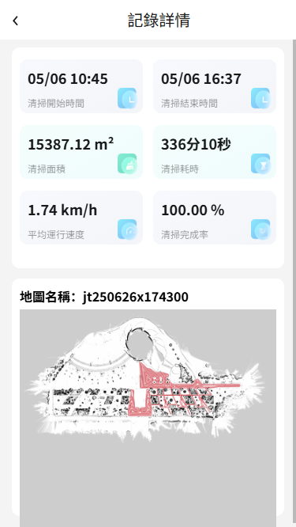
3.4.4 設備遠程設置
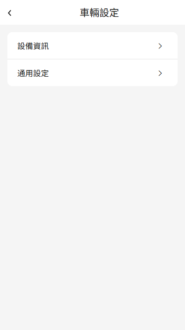
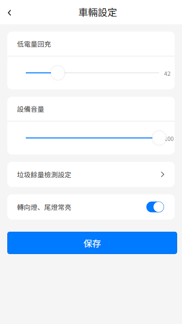
3.4.5預約任務
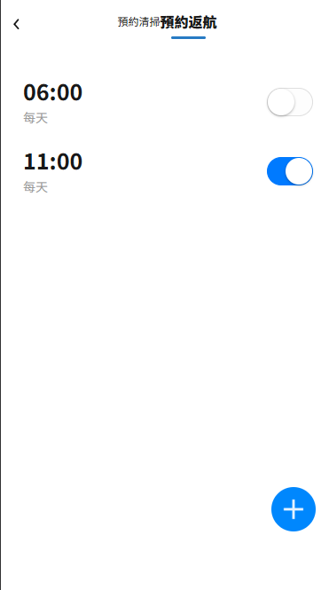
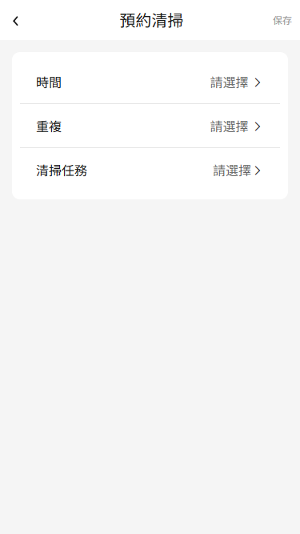
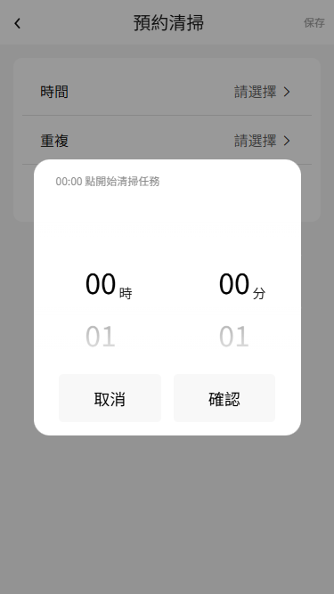
1）車輛需要一直處於待機的狀態
2）車輛需要設定好充電點，並且在webapp設定好充電點到路徑起點的出航線和返航線，並且車輛一直位於充電點的地方。
3.5 清潔報告
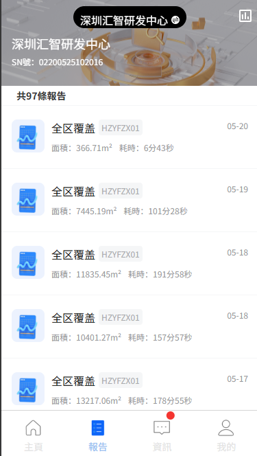
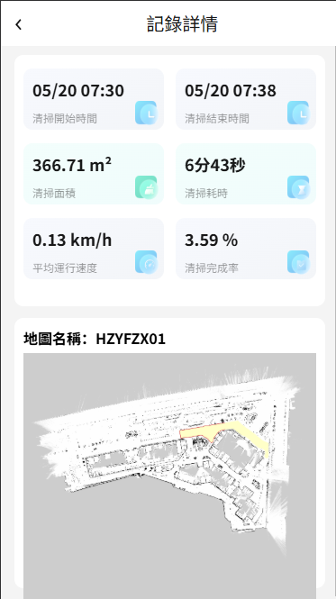
3.6 我的
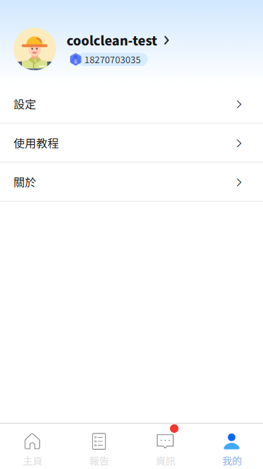
3.6.1 App顯示語言切換
點擊【顯示語言】，即可完成App的中英文切換。
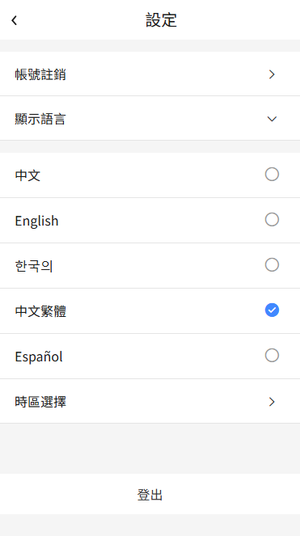
3.6.2 App關於信息
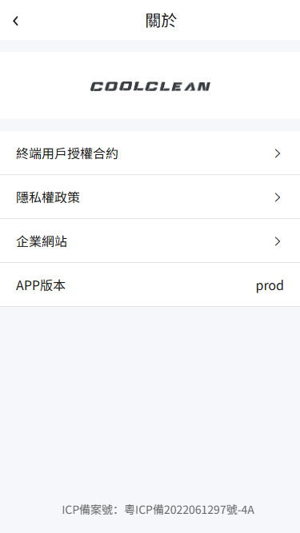